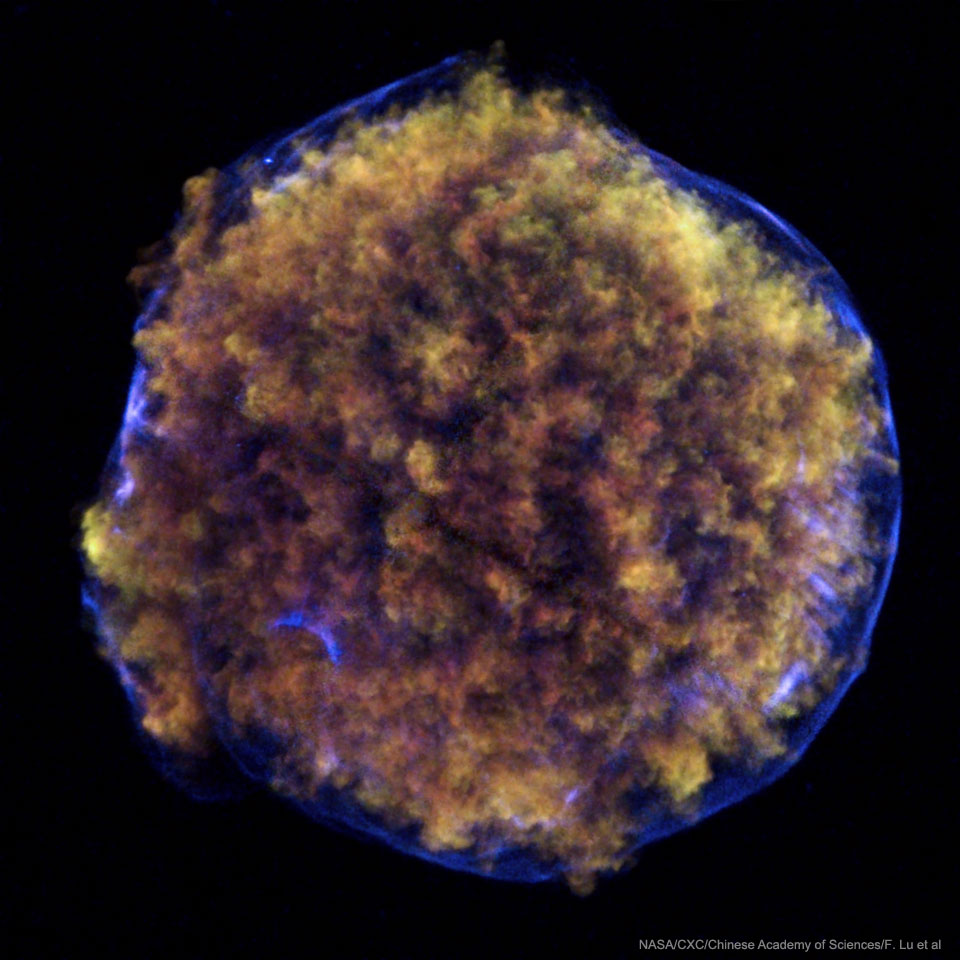

Tycho's Nova (SN 1572) was a Type Ia supernova that appeared in the constellation Cassiopeia in November 1572. At peak brightness around 16 November it reached apparent magnitude −4, rivalling Venus and visible in daylight. It remained visible to the naked eye for about 16 months before fading by March 1574.

NASA/CXC/F.J. Lu (Chinese Academy of Sciences) et al.
The explosion was a thermonuclear detonation: a carbon-oxygen white dwarf in a binary system accreted material from a companion star until it exceeded the Chandrasekhar limit (about 1.4 solar masses) and blew itself apart. Unlike core-collapse supernovae, Type Ia events leave no stellar remnant behind.
Historical Significance
Several European observers recorded the new star in early November 1572, but the Danish astronomer Tycho Brahe made the most careful measurements, beginning on 11 November from Herrevad Abbey. His observations showed no detectable parallax, proving the object lay far beyond the Moon, at the distance of the fixed stars. This directly contradicted Aristotelian cosmology, which held the heavens to be perfect and unchanging.
Tycho published his findings in De Nova Stella (1573), one of the most influential works in the history of astronomy. The word 'nova' entered the astronomical vocabulary from its title and was later extended to 'supernova' for more powerful explosions.
The Remnant Today
The expanding remnant spans about 8 arcminutes on the sky, corresponding to roughly 55 light-years across. Its distance is estimated at 8,000 to 13,000 light-years (2.5 to 4 kpc), though the exact value remains debated. The forward shock is still expanding at 4,000 to 5,000 km/s, slowing where it meets denser interstellar clouds.
The remnant was first detected at radio wavelengths in 1952 by Hanbury Brown and Hazard at Jodrell Bank. Deep Chandra X-ray Observatory observations later revealed X-ray 'stripes' in the remnant, a pattern not seen in other supernova remnants, suggesting that particles are being accelerated to energies roughly 100 times greater than the Large Hadron Collider achieves.
In 2008, Krause and colleagues obtained a spectrum of the original 1572 explosion by catching its light echo, photons from the blast reflected off interstellar dust and arriving at Earth centuries later. The spectrum confirmed SN 1572 as a normal Type Ia supernova, the same class used as standard candles for measuring cosmological distances.
See also: supernova, supernova remnant, Type Ia supernova, Chandrasekhar limit, white dwarf, standard candle, apparent magnitude.